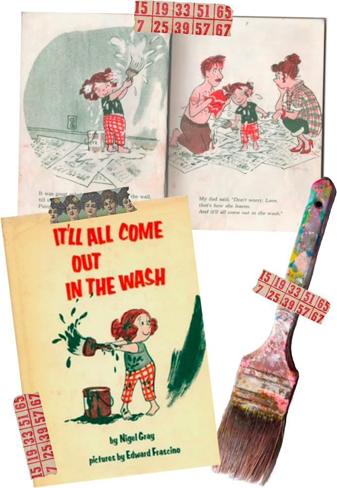

I was 12 years old living in a tiny midwestern town the first time I heard this song. My love for classical music started at a young age due to my involvement in ballet and I wanted explore new artists. I was quickly enamored and immediately did a deep dive on the artist, Olafur Arnalds, and his hometown in Iceland.
Around the same time in my life, I experienced my first panic attack. I found that listening to this album helped me more than anything. And looking at pictures of Iceland brought me a sense of calm I have never been able to describe properly.
I went through the album and translated each of the titles. Before translating this title, this song particularly resonated with me and after learning it translates to “Slowly, comes light” I knew it'd be both a comforting mantra and my first tattoo.
I spent the first 14 years of my life in farm town in northern Illinois. At the time, I hated that we didn’t have internet in my house. Now looking back, I am deeply grateful for all the time I spent bored and imagining or playing outside. Between the nature reserves and holidays on my Pak’s farm, I spent hours exploring the outdoors. I have so many memories of catching minnows in ponds with the smell of hay and wild onions in the air. Finding a wild onion always felt like a treasure, I always felt pride when I could identify them properly as a kid and pull them out of the ground. Now I have one growing permanently out of my shoe.

The movie adaptation of the broadway musical "RENT" stayed close to my heart from the first time I watched it with my mom and forever forward. It was a crucial part of my discovering my own queerness. My mom saw the Broadway production a month after I was born in 1997 and still had a t-shirt from the night. Eventually, she gave the shirt to me and I wore it to literal rags. When I finally accepted my beloved heirloom was close to dust, I decided the best way to keep it close was to get it tattooed on my leg.


In my early 20s I dealt with an undiagnosable issue that led me to have chronic pelvic pain for 9 months. In the process of trying to figure out what was causing my constant pain, it was discovered I had a malformation in my uterus that could cause issues with carrying any pregnancy to term. I have always wanted children so this was heartbreaking to hear. In the pain of this new understanding of my body I turned to my favorite way of processing big emotions: art. I drew the original version of this tattoo. Mandrake roots are a prominent symbol of fertility in many African cultures and my own art often incorporates fetuses of various species so it felt fitting for many reasons. I took the drawing to my artist, Yessi , and we altered it a bit to age well and fit my arm the best. This has been one of my favorite tattoos since.


My mom had some of her childhood books still into my childhood and often shared them with us at storytimes. There was one book in particular called “It will all come out in the wash” about a girl who spilled paint everywhere and was scared to tell her parents. Through trying to fix it, the disaster became worse and worse until finally she had to tell her parents. They quickly reminded the girl, at the end of the day no matter how bad it gets, it will all come out in the wash. This lesson stuck with me. I am much better at understanding mistakes are temporary and fixable and part of life. In the end, it’ll all come out in the wash.

The semicolon project is an international movement for suicide prevention and awareness. In high school I experienced my first deep depressive episode which landed me in a partial hospitalization program and then on a suicide hold in the hospital. I never attempted suicide outright but I had a plan, a letter written I carried with me in my backpack every day, and every intention to complete the plan. But, god save me, the moment I knew I’d do it I went to my mom and told her I needed to be put in the hospital immediately or I’d kill myself by the next morning. I was taken to the hospital within 30 minutes and admitted on a 51/50. Through therapy, hard work, support, and the proper medication regimen I was able to stabilize enough to find hope in the world again. Through the beginning of my recovery, and even now all these years later, I find so much power in being open and authentic about my experiences with my mental health. The mother’s day after I graduated from my therapy program, my mom and I got matching semicolon tattoos. The author uses a semicolon when they could end a sentence but decide to continue; and that’s exactly what I did. I love this tiny yet powerful tattoo, the solidarity that comes with a simple flash of it to a stranger who has one too. It’s beautiful to find these tiny connections in this life I love living but almost didn’t see through.


During my high school struggle with depression and anxiety I resorted to a lot of destructive coping mechanisms. I knew a lot of kids over the course of middle and high school who turned to self harm and always thought it was a cop out. Eventually I found myself turning to the dangerous habit. It spiraled out of control as I reached the beginning of my treatment journey and by the time I was admitted it was at an obsessive level. I tried for months to quit but I’d make it 2-4 days and relapse. My therapist always treated me so compassionately, explaining to me that often people become chemically addicted to the dopamine and adrenaline that are released when you’re engaging in something so terrifying and dangerous but so immediately rewarding. On January 25th, 2016 I came to therapy with a plastic bag full of everything I’d used or could use in the future to self harm. I was finally ready. And I stuck to it. My leg was covered in hundreds of tiny scars and for so long I was so embarrassed; constantly in fear of someone asking me about what happened. But then the tides began to change and I embraced the physical signs of my healing journey. I always thought of covering them with a tattoo but instead decided to incorporate a tattoo into the marks left behind. The white ink was originally much brighter but in time, along with my scars, it has faded. Leah the bee fades right alongside the memory of the hopeless nights I’d turn to anything to escape. The more faint it all becomes, the more proud of myself I feel.

When I was a senior in high school, I experienced a Sylvia Plath-esque descent to madness that landed me in a therapeutic program. Being 18 at the time, I was placed in an adult program despite still being a high school student and I was terrified. During my intake, I was recommended to Room 5, where the most “Process Groups” took place. I was so scared to explore the other rooms I spent 3 groups a day in room 5. After a few days, I realized I wasn’t the only one who took such a habitual approach. Everyone in the room shared the deepest parts of themselves for hours a day with strangers and I surprisingly became very close with several of the adults in the room. My best friends became women and men between the ages of 25-65 and I gained an unreal and unprecedented perspective. We stayed in touch for several years after discharge and I still have a few of them on Facebook. Having the opportunity to witness a stranger you knew in their worst moment of life evolve is fascinating. Some of them were even parents to the friends I had at school which gave me a secret perspective on the people around me. I remember at the time I read something about creativity and how the color blue supposedly stimulates the production of serotonin in the brain. This is why so many social media apps used blue, the article also claimed that there were walls painted blue in big think tank companies like google that workers would stare at when they hit a creative block. For whatever reason this stuck with me and I decided to get my “Room 5” tattoo in blue ink. I thought it was ironic, and secretly funny, that the place I spent the most time with the least amount of serotonin was in blue ink permanently on my arm; stimulating the thing I lacked desperately every time I looked at it.
Junior year of high school my art teacher, Ms. Hood, had my table spend 3 class periods folding paper cranes for another teacher’s birthday party later that week. Our table had become really close and we always had such a blast together. And we, of course, got way too good at folding cranes during that week. We’d folded at least 300 cranes and thus dubbed ourselves the crane gang. One day, one of the girls fell asleep at the table and we stacked as many cranes on her as we could before she woke up. We got to somewhere around 20 before we were all laughing so hard we couldn’t contain ourselves. Later, in senior year of high school I was put on a 2.5 day 51/50 hold in an adult mental health wing. I was so utterly bored and anxious that I decided to rip my patient manual into varying size squares and fold them into paper cranes. I did that all day, every day, for the entirety of my stay. I folded so many I formed a blister on my finger. I took all the cranes with me when I left and strung them up to display in my senior art show about my mental health. Paper cranes have since remained a symbol of this time for me. I can’t quite find a through line but they just always made sense as a motif in my life. Friday the 13th, 2023 blessed me with a cheap flash option for this little crane.


I struggled with anxiety traps and thought spirals in such an unforgiving way in my teens. I was coming to terms with some of the trauma I had experienced and constantly found myself getting stuck. I talked to my therapist at the time, Leah, about these struggles and she told me to always remind myself to live in the moment; she shared with me a mantra that remained close to my heart from then on: “That is where you were then, this is where you are now”. It seems funny now, knowing where my life would go after my sessions with her, to think about the trauma I was processing and how small it felt compared to the relationship I was in for the 6 years after. But being now through that dark time, my THAT and THIS remind me of the mantra that still helps me through the flashbacks. I was there. But now, THIS is where I am. THIS place is safe. THIS place is free.


I sat in therapy one day right after graduating high school and talked about how I was embarrassed I landed myself in an emotionally abusive relationship. The therapist offered me a really helpful analogy that allowed me to gain a much less self-deprecating perspective. She told me about how if you put a frog in a pot of water, it will just think it’s in water; it has no way of knowing there’s a flame underneath bringing the water to a boil until it’s too late. Just like I had no idea what the relationship would become until it was too late.
"Ladies and gentlemen, it seems the storm has won."


When I read Brave New World in my senior AP Literature class, it opened something new and beautiful inside me. I had never been introduced to something so evocative or futuristic, I fell in love immediately. I was always a fan of controversial conversations and long-winded class discussions. Reading this with my peers gave me a new level of this; making me excited for the possibilities of college literature courses. This eventually evolved into inspiration for me majoring in Literature in college.

When I was a kid my mom bought a 2.5 foot concrete Virgin Mary statue for our yard at home to honor a student of her who passed away. We placed the statue under an arch surrounded with morning glories. Mary became a very powerful and comforting figure in my life as I continued to grow up and throughout my adulthood. I have always been a spiritual person and on the open-ended search for figures I resonate with to guide me through the journey of life. When I was at the darkest point in my life I tripped on shrooms for the first time and I ended up having one of the best spiritual experiences of my life. During the trip I remember standing at a portal receiving inexplicable information on animals, the most memorable being a jaguar. From then on, I resonated with the animal more than ever. I hoped to create a large tattoo that expressed my various connections to these entities. I followed Bubzee, the artist for this piece, on instagram for almost 10 years by the time I saw her. She did a visitation in Oakland which I knew would be my chance. I let her take over a majority of the creative process but focused toward my own prominent figures of spiritual guidance. he tattoo was the most painful thing I’d ever experienced and I genuinely almost tapped out. I now wear this adornment with absolute pride. A check off the bucket list, forsure.

I stumbled across an artist on tumblr. in my search for tattoo inspiration one night named Miki Kim. She had brightly colored, strange works that bordered somewhere between surreal and childlike. I loved a few in particular, including a bodice with a little sprout growing out of the neck. I wanted to see her for a piece but unfortunately she lives in South Korea where tattooing is both illegal and wildly expensive. I took the concept to my artist and told her I loved the idea but wanted something more dainty in black and white. We created the piece as it exists today with stippling and fine lines. The flowers growing out of her neck representing the lavender that grew outside my dorm in Porter at UCSC during my favorite year of life at that time and the pansy to represent my then-identity of pansexuality.


Despite the difficult relationship I had with my biological dad, I have a lot of fond memories from childhood when he was present. I remember one game we played in the pool called “pincher worms” where he’d hold his arms out and chase us around the pool. It was a very effective way to tire us out and I remember vividly my very real fear of these mystic creatures. As a kid I always imagined the pincher worms as centipedes with human arms instead of antennae. I was terrified to say the least. One day, I decided to draw out my imagined nemesis and realized what a cool tattoo it would be. I wanted to open more of a space in my heart to hold on to the positive things about my dad. The girl who did the tattoo, Rhianna, completely revamped my drawing and I was in love. My brother took the concept to another artist and ended up getting a restyled version of the same thing. I love mine, but his is undeniably sick as fuck. And they’re a beautiful memorial to our dad who has since passed away.

My senior year of high school, upon graduation, I gave handwritten letters to all the teachers who influenced me most. One teacher in particular, Mr Whetstone, gave me a safe place I needed that year more than ever. A few days later, he wrote me a letter back. In this letter, he wrote “Life throws you big waves, but you are not a tiny boat”. I’ve used it in times of stress ever since, reminding myself what I am capable of. I am not a tiny boat. At the time I got this tattoo, I had begun exploring boundaries with my therapist. Julie showed me a diagram of the 3 types of boundaries. A solid line for rigid, an even dotted line for healthy, and a very spaced out dotted line for porous. I decided to create this tattoo to remind me of the control I have in co-creating situations for the best possible outcome and overcoming my stressors by remaining tenacious.